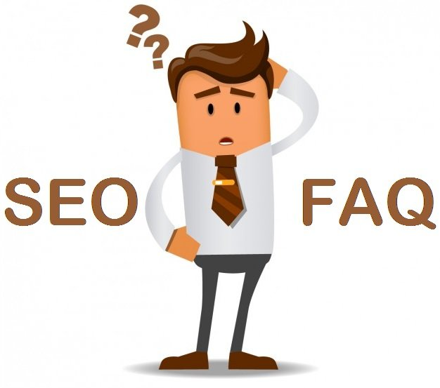

Profesjonalne Pozycjonowanie Stron
Najlepsza Agencja z Wrocławia w Pozycjonowaniu Stron
Pozycjonowanie Stron WWW
Pozycjonowanie Twojej strony internetowej sprawi, że witryna widoczna będzie na większą ilość fraz kluczowych na wysokich pozycjach w wyszukiwarce Google. Jesteśmy najlepsi w pozycjonowaniu stron lokalnie w mięście Wrocław i okolicach. Ale odnosimy także sukcesy w całej Polsce
Projektowanie i Tworzenie Stron WWW
Tworząc strony WWW stosujemy najnowsze technologie programistyczne, a wszystkie wykonane przez nas strony internetowe są responsywne (RWD) i zoptymalizowane pod kątem SEO. Tworzymy strony w większości dla klientów z miasta Wrocław.
Optymalizacja Stron WWW / SEO
Optymalizacja strony to działania, których celem jest poprawa strony internetowej aby ta wyświetlała się jak najwyżej w rankingu Google na zapytania związane bezpośrednio z określoną lokalizacją lub regionem. Wrocław jest nasza siedziba, najlepsze wyniki osiągamy właśnie w tym mięście.
Projektowanie & Pozycjonowanie stron www
Należy pamiętać, że samo stworzenie strony internetowej nie da nam wymiernych korzyści. Zawsze po stworzeniu strony internetowej zalecamy naszym klientom reklamę strony internetowej w wyszukiwarce Google za Google Ads dawniej Adwords - przy wykorzystaniu Google ADS docieramy do klientów którzy są w danej chwili zainteresowaną naszą usługą bądź produktem lub przez pozycjonowanie stron Wrocław jako lokalne wyszukiwanie. Jak wygląda cały proces tworzenia i pozycjonowania stron?
-

Projektowanie strony WWW
-
Tworzenie Strony WWW
-
Analiza Słów kluczowych
-
Audyt OFF-site i ON-site
-
Optymalizacja strony www
-
Content marketing
-
Buzz Marketing – marketing szeptany
-
Link building
-
Monitoring Pozycji
SEO - SEARCH ENGINE OPTIMIZATION
SEO to w skrócie optymalizacja strony internetowej pod kątem wyszukiwarek
Optymalizację strony przeprowadza się w kilku różnych dziedzinach
SEO i pozycjonowanie to nie są równoważne pojęcia. Obydwa odnoszą się do wyników wyszukiwania i pozycji strony w wyszukiwarkach, jednakże w ich zakres wchodzą inne działania. Co należy do działań agencji SEO?
-

Content Marketing
Po pierwsze wprowadza się widoczne dla internautów zmiany w treści strony.
-

Optymalizacja strony
Po drugie działania związane z optymalizacją wiążą się także z wprowadzaniem zmian w kodzie witryny, które nie mają bezpośredniego wpływu na wygląd witryny internetowej.
-

Link building
Dodatkowo optymalizuje się profil linków przychodzących zazwyczaj bazując na analizie działań konkurencji.
Z kolei pozycjonowanie strony jest procesem, na który składają się wszystkie działania (również wspomniana optymalizacja), które mają umożliwić danej stronie internetowej osiągnięcie jak najlepszej (czyli jak najwyższej i stabilnej) pozycji w wyszukiwarkach po wpisaniu konkretnej frazy. Pozycjonowanie jest mocno zależne od optymalizacji, dzięki której możliwe jest dostosowanie treści, linków, jak i innych elementów strony internetowej, tak aby była ona jak najbardziej widoczna dla robotów wyszukiwarki. Obecnie jesteśmy najskuteczniejsi w pozycjonowaniu stron internetowych we Wrocławiu
Nasz zespoł Specialistów SEO - Wrocław

Zespół specialistów SEO
Pracownicy agencji CZYSTE SEO posiadają bardzo duże doświadczenie w optymalizacji i pozycjonowaniu stron

Maciej Ważonek
Proin iaculis purus consequat sem cure digni ssim. Donec porttitora entum suscipit aenean rhoncus posuere odio in tincidunt.

Żaneta Ozdobek
Proin iaculis purus consequat sem cure digni ssim. Donec porttitora entum suscipit aenean rhoncus posuere odio in tincidunt.

Ernest Piekany
Proin iaculis purus consequat sem cure digni ssim. Donec porttitora entum suscipit aenean rhoncus posuere odio in tincidunt.
Zadowoleni Klienci z Pozycjonowania stron Wrocław
Opinie naszych klientów to najlepsza nagroda ze skutecznego pozycjonowania stron
“ Jestem bardzo zadowolona z współpracy z firmą Czyste SEO. Pierwsze efekty już widoczne a to dopiero początek. Zawsze pomocna i przesympatyczna obsługa.”
- Marcelina Pokora, Właścicielka Salonu Jubilerskiego
“ Korzystałem z usług Czyste SEO przy okazji otwierania nowego punktu sprzedaży. Miejsce zostało przyjęte z entuzjazmem i nie świeci pustkami, więc uważam kampanię pozycjonowania stron za udaną. Polecam tą firmę do tego typu reklam.”
- Bartosz Lipski, Właściciel Komisu Samochodowego
Gotowy na pozycjonowanie stron we Wrocławiu?
Napisz do NasNarzędzia które wspomoagają naszą pracę podczas pozycjonownia stron

- Google Moja Firma -
Podstawowy element skutecznego pozycjonowania stron lokalnie
Gogle Moja Firma to bezpłatne narzędzie, które pozwala zarządzać wyglądem firmy w wyszukiwarce Google i Mapach. Użytkownicy Google wyszukując lokalnych firm mogą łatwo sprawdzić takie dane jak adres siedziby firmy, telefon kontaktowy, godziny otwarcia, a nawet opinie internautów.
Korzyści z Google Moja Firma??
Popraw swoje lokalne SEO, kieruj większy ruch na swoją stronę internetową i konta w mediach społecznościowych , ułatw potencjalnym klientom znalezienie cię, zarówno online, jak i w zwykłym miejscu. Z łatwością pomożemy zoptymalizować Twoją wizytówkę aby wyróżniała sie od innych
Wskazówki dotyczące optymalizacji Google Moja Firma
- Zgłoś i zweryfikuj swój wpis GMB, jeśli jeszcze tego nie zrobiłeś.
- Wypełnij WSZYSTKIE informacje ze swojego wpisu GMB.
- Prześlij wysokiej jakości zdjęcia i filmy przedstawiające Twoją firmę.
- Poproś swoich obecnych klientów o przedstawienie opinii Google.
- Po opublikowaniu opinii klientów odpowiedz na nie!
- Publikuj odpowiednie artykuły i wiadomości w swoim profilu.
Napisz do nas a pomożemy Twojej firmie w prawidłowej optymalizacji wizytówki GMF
- FAQ -
Najcześciej zadawane pytania przy procesie pozycjonowania stron
Czym jest Pozycjonowanie Stron?
Pozycjonowanie stron w wyszukiwarce internetowej to działania mające na celu zwiększenie widoczności strony internetowej w wynikach wyszukiwania. Najczęściej pozycjonowanie bazuje na technikach nie w pełni zgodnymi z wytycznymi wyszukiwarek. Pozycjonowanie często wykonywane jest razem z działaniami SEO.
Co to jest SEO?
Jest to praktyka optymalizacji stron internetowych, aby osiągnęły wysoką pozycję w wynikach wyszukiwania Google lub w innych wyszukiwarkach
Jakie są rodzaje SEO?
Zasadniczo istnieją trzy rodzaje SEO: SEO White HAT (najlepsze techniki SEO zalecane przez Google, stosujemy wyłącznie techniki White HAT), SEO Black HAT (jest to niezgodne z zasadami Google), Grey HAT SEO (w zasadzie należy między nimi, technicznie poprawne, ale etycznie błędne, należy unikać).
Co to jest lokalne SEO?
Lokalne SEO to proces optymalizacji strony internetowej dla określonej lokalizacji. Jest to najlepsze rozwiązanie dla firm, które świadczą swoje usługi tylko w tej lokalizacji, na przykład - restauracje, hotele, centra szkoleniowe itp.
Co to jest Google Analytics?
Google Analytics to narzędzie analityczne Google. To całkowicie bezpłatne narzędzie, które możesz wykorzystać w swojej witrynie. Za pomocą tego narzędzia możesz uzyskać dokładną analizę odwiedzających witrynę.
Czym jest budowanie linków?
Tworzenie linków to proces zdobywania linków zwrotnych z innych źródeł, takich jak strony internetowe, fora, czasopisma online itp. do Twojej witryny, aby zwiększyć profil linków oraz autorytet strony. Tworzenie linków jest niezbędne, jeśli chcesz uzyskać lepsze rankingi wyszukiwania dla kierowanych słów kluczowych.